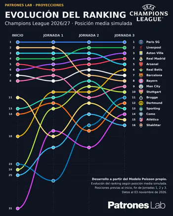
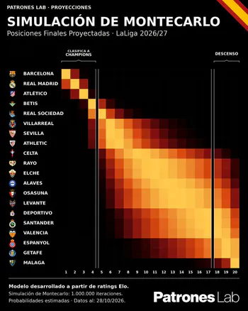
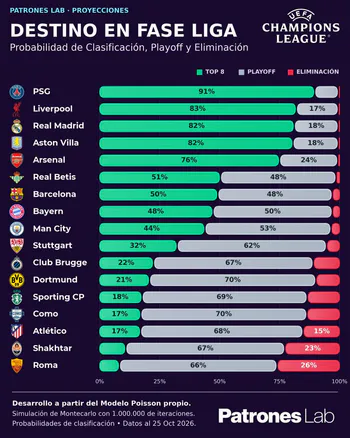
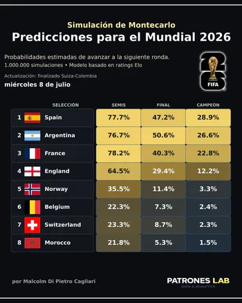

Liga Mistrzów 2026/27 · Prognoza punktów
Prognoza punktów na zakończenie fazy ligowej na podstawie rozkładu Poissona i symulacji Monte Carlo: mediana oraz przedziały percentylowe 25–75 i 5–95.
Zobacz publikację ↗Prognoza punktów na zakończenie fazy ligowej na podstawie rozkładu Poissona i symulacji Monte Carlo: mediana oraz przedziały percentylowe 25–75 i 5–95.
Zobacz publikację ↗
Zmiany prognozowanych miejsc końcowych do 3. kolejki na podstawie miliona symulacji z rozkładem Poissona i metodą Monte Carlo.
Zobacz publikację ↗
Mapa cieplna prognozowanych miejsc końcowych drużyn LaLiga na podstawie miliona symulacji Monte Carlo.
Zobacz publikację ↗
Symulacja z rozkładem Poissona i metodą Monte Carlo, szacująca szanse miejsca w Top 8, gry w barażach i odpadnięcia z Ligi Mistrzów.
Zobacz publikację ↗
Porównanie rankingu Elo, prognozowanych punktów i zakresów symulowanych wyników dla każdej drużyny.
Zobacz publikację ↗
Histogramy symulowanej liczby punktów, pokazujące najczęstsze wyniki rozgrywek.
Zobacz publikację ↗
Porównanie miejsc końcowych za pomocą percentyli, przedstawiające najbardziej prawdopodobny zakres wyników.
Zobacz publikację ↗
Prezentacja modelu Poissona i symulacji Monte Carlo do szacowania wyników oraz klasyfikacji.
Zobacz publikację ↗
Publikacja na LinkedIn dotycząca symulacji. Szczegółowa treść oczekuje na weryfikację.
Zobacz publikację ↗
Zmiany prognozowanych pozycji reprezentacji w kolejnych kolejkach rozgrywek.
Zobacz publikację ↗
Model bramek oparty na rozkładzie Poissona i symulacja Monte Carlo do prognozowania wyników Ligi Mistrzów.
Zobacz projekt w opracowaniu ↗
Porównanie rankingu Elo i szacowanego prawdopodobieństwa wygrania Ligi Narodów przez poszczególne reprezentacje.
Zobacz publikację ↗
Szanse awansu do kolejnych etapów rozgrywek, od fazy grupowej po finał.
Zobacz publikację ↗
Prezentacja modelu symulacyjnego do analizy prawdopodobieństw w Lidze Narodów UEFA.
Zobacz publikację ↗
Analiza ruchu lotniczego na Balearach na podstawie publicznych danych AENA.
Zobacz publikację ↗
Symulacja szans wygrania grupy, awansu w fazie pucharowej i zdobycia tytułu.
Zobacz projekt ↗
Aktualizacja prawdopodobieństw miejsc końcowych po uwzględnieniu nowych wyników i rankingów Elo.
Zobacz publikację ↗
Publikacja o symulacji LaLiga 2026/27. Szczegóły oczekują na weryfikację.
Zobacz publikację ↗
Symulacja scenariuszy do szacowania prawdopodobieństw miejsc i wyników końcowych LaLiga.
Zobacz projekt w opracowaniu ↗
Publikacja o scenariuszach LaLiga 2026/27. Szczegóły oczekują na weryfikację.
Zobacz publikację ↗
Zastosowanie DBSCAN do identyfikacji skupień i nietypowych operacji w danych transakcyjnych.
Zobacz publikację ↗
Eksploracja przejazdów taksówkami w Chicago w celu identyfikacji wzorców czasowych, przestrzennych i ekonomicznych.
Zobacz publikację ↗
Model klasyfikacyjny do analizy transakcji i sygnałów związanych z oszustwami.
Zobacz publikację ↗
Prezentacja Patrones Lab oraz projektów analizy danych, modeli i wizualizacji.
Zobacz publikację ↗
Model porównujący metody klasyfikacji do badania szkód gospodarczych spowodowanych zjawiskami pogodowymi.
Zobacz projekt w opracowaniu ↗
Dashboard wydatków na dostawców do analizy zmian, kategorii i rozkładu geograficznego.
Zobacz projekt ↗
Dashboard rankingów Spotify do analizy odtworzeń, zmian w czasie i rozkładu według krajów.
Zobacz projekt w opracowaniu ↗
Aktualizacja szans zdobycia mistrzostwa świata i możliwych par finałowych.
Zobacz publikację ↗
Symulacja par ćwierćfinałowych i szans awansu w drabince mistrzostw świata.
Zobacz publikację ↗
Szacowanie szans dotarcia do półfinału, gry w finale i zdobycia mistrzostwa świata.
Zobacz publikację ↗
Aktualizacja szans awansu i zdobycia tytułu po 1/16 finału.
Zobacz publikację ↗
Prognoza szans awansu w kolejnych rundach na podstawie wyników dostępnych w danym momencie.
Zobacz publikację ↗
Model symulacyjny szacujący szanse awansu i zdobycia mistrzostwa przez każdą reprezentację.
Zobacz projekt ↗
Porównanie zawodników Argentyny za pomocą percentyli obliczanych według pozycji i wskaźników w przeliczeniu na 90 minut.
Zobacz publikację ↗
Wizualne porównanie indywidualnych wyników na mundialu w Katarze za pomocą radarów percentylowych.
Zobacz projekt ↗
Analiza wpływu akcji z piłką na poziom zagrożenia w finale Argentyna–Francja.
Zobacz publikację ↗Artykuł o piłce nożnej i prawdopodobieństwie w meczu Argentyna–Francja na mundialu w Katarze 2022.
Czytaj artykuł ↗
Model probabilistyczny szacujący szansę zdobycia gola po każdym strzale na mundialu w Katarze.
Zobacz projekt ↗Analiza zagrożenia generowanego przez akcje z piłką podczas mundialu w Katarze 2022.
Zobacz projekt ↗
Interaktywny dashboard do analizy popytu i tras zarejestrowanych przejazdów taksówkami w Chicago.
Zobacz publikację ↗
Mapa koncentracji przejazdów w różnych obszarach Chicago, opracowana na podstawie otwartych danych.
Zobacz publikację ↗
Analiza miejsc rozpoczęcia i zakończenia podróży, tras i przestrzennej koncentracji taksówek w Chicago.
Zobacz publikację ↗Mapa obszarów o największej aktywności i przepływów między miejscami rozpoczęcia i zakończenia zarejestrowanych przejazdów.
Zobacz projekt ↗Interaktywny dashboard do analizy aktywności, opłat i tras taksówek w Chicago.
Zobacz projekt ↗Analiza zmian zarejestrowanych przejazdów według dnia, godziny, odległości i opłaty.
Zobacz publikację ↗Artykuł o miejskiej sieci przejazdów taksówkami w Chicago na podstawie otwartych danych.
Czytaj artykuł ↗Analiza popytu, tras i opłat za zarejestrowane przejazdy taksówkami w Chicago.
Zobacz projekt ↗
Analiza cen według lokalizacji, odległości od centrum i charakterystyki dzielnic.
Zobacz projekt ↗
Model rozróżniający relatywnie drogie i tanie oferty zakwaterowania w obrębie danego rodzaju pokoju.
Zobacz projekt ↗
Porównanie cen i rozkładu przestrzennego ofert Airbnb w Londynie.
Zobacz publikację ↗Artykuł o cenach zakwaterowania Airbnb w Londynie i ich rozkładzie przestrzennym.
Czytaj artykuł ↗Eksploracja cen, rodzajów zakwaterowania, dostępności i różnic między dzielnicami Londynu.
Zobacz projekt ↗Analiza liczby pasażerów, połączeń i sezonowości na lotniskach Balearów.
Zobacz publikację ↗Artykuł o turystyce na Balearach na podstawie otwartych danych AENA.
Czytaj artykuł ↗Analiza ruchu lotniczego na Majorce, Ibizie i Minorce na podstawie publicznych danych AENA.
Zobacz projekt ↗Grupowanie na podstawie gęstości w celu identyfikacji nietypowych operacji i potencjalnych wzorców oszustw.
Zobacz projekt ↗Nadzorowana klasyfikacja operacji do szacowania ryzyka oszustwa i interpretowania istotnych sygnałów.
Zobacz projekt ↗
Segmentacja operacji metodą K-means w celu badania nietypowych zachowań związanych z oszustwami.
Zobacz projekt ↗